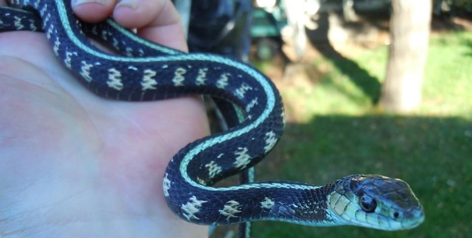

A lot of snakes aren't venomous, and most aren't a real threat to humans or other domestic animals.
If you're looking for an interesting animal to adopt as a pet, a snake might be just right for you!
Snakes are easy to take care of, and they can recognize and interact with humans,
making them perfect pets for anyone looking for an exotic pet.
